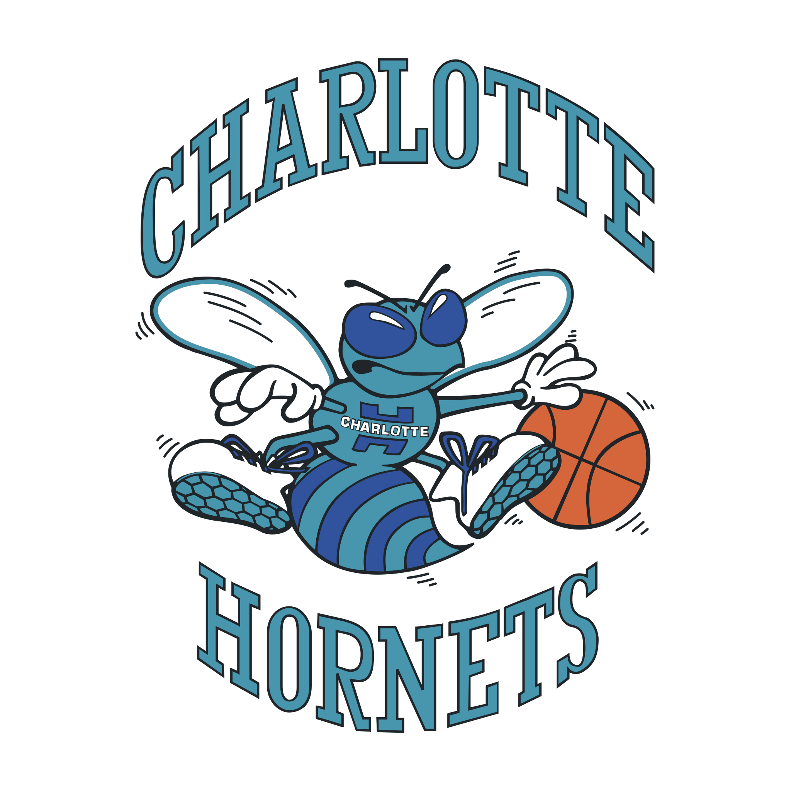

Malik Rose
1996-97 to 2008-09 · Career Map
 San Antonio Spurs,
San Antonio Spurs,  New York Knicks,
New York Knicks,  Oklahoma City Thunder
Oklahoma City Thunder
His teams won 2 titles: 1998-99 and 2002-03. In his 813 games for 4 teams over 13 seasons they went 475–338 (58.4%), +137 games over .500, with an average final finish of 10.9. The biggest one-season rise in his career: the New York Knicks went from #29 in 2005-06 to #21 in 2006-07.
Final NBA finish, season by season
Title Finals Other playoffs Missed. #1 = champion; the dashed line is last place that season. Each point opens that season's final standings.
All 30 teams ranked in 2004-05, his best finish (#1)Teammate help
 Tim Duncan89.28 seasons
Tim Duncan89.28 seasons David Robinson10.53 seasons
David Robinson10.53 seasons- Glen Rice4.51 season
Seasons with help 6.8 to 11.2 (4): best finish #3 of 29, 2000-01, worst #9 of 29, 1999-00.
Career
Regular seasons 1946-47 to 2026-27, games through Nov. 17, 2026. Records include 2026-27 to date; season counts and finishes use completed seasons. Each card opens its board. How we count.
Latest completed seasons
- 2008-09
 Oklahoma City Thunder: #27 of 30, 23–59 · Missed
Oklahoma City Thunder: #27 of 30, 23–59 · Missed - 2007-08
 New York Knicks: #25 of 30, 23–59 · Missed
New York Knicks: #25 of 30, 23–59 · Missed - 2006-07 New York Knicks: #21 of 30, 33–49 · Missed
Season by season
Newest first; every header sorts. Final NBA finish is the team's rank among all teams that season (#1 = champion) and opens that season's standings. "Without him" uses the team-season window; the span line counts only the games between his first and last game for the team.
| 2008-09 | #23 of 30 | 32–50 39.0% | Missed | 18 of 82 | 7–11 38.9% | 17–22 43.6%span: 14–20, gap −2.3 | −4.7 | |
| 2008-09 | #27 of 30 | 23–59 28.0% | Missed | 20 of 82 | 8–12 40.0% | 2–7 22.2%span: 1–2, gap +6.7 | +17.8 | |
| 2007-08 | #25 of 30 | 23–59 28.0% | Missed | 49 of 82 | 11–38 22.4% | 12–21 36.4%span: 10–20, gap −10.9 | −13.9 | |
| 2006-07 | #21 of 30 | 33–49 40.2% | Missed | 65 of 82 | 25–40 38.5% | 8–9 47.1%span: 7–9, gap −5.3 | −8.6 | |
| 2005-06 | #29 of 30 | 23–59 28.0% | Missed | 72 of 82 | 20–52 27.8% | 3–7 30.0%span: 3–7, gap −2.2 | −2.2 | |
| 2004-05 | #1 of 30 | 59–23 72.0% | Title 4–3 | 50 of 82 | 39–11 78.0% | 3–1 75.0%span: 3–1, gap +3.0 | +3.0 | |
| 2004-05 | #23 of 30 | 33–49 40.2% | Missed | 26 of 82 | 11–15 42.3% | 1–1 50.0%span: 0–1, gap +42.3 | −7.7 | |
| 2003-04 | #5 of 29 | 57–25 69.5% | Lost conf semis 2–4 | 67 of 82 | 44–23 65.7% | 13–2 86.7%span: 13–2, gap −21.0 | −21.0 | |
| 2002-03 | #1 of 29 | 60–22 73.2% | Title 4–2 | 79 of 82 | 57–22 72.2% | 3–0 100.0%span: 3–0, gap −27.8 | −27.8 | |
| 2001-02 | #5 of 29 | 58–24 70.7% | Lost conf semis 1–4 | 82 of 82 | 58–24 70.7% | N/A | N/A | |
| 2000-01 | #3 of 29 | 58–24 70.7% | Lost conf finals 0–4 | 57 of 82 | 40–17 70.2% | 18–7 72.0%span: 18–7, gap −1.8 | −1.8 | |
| 1999-00 | #9 of 29 | 53–29 64.6% | Lost 1st round 1–3 | 74 of 82 | 48–26 64.9% | 5–3 62.5%span: 5–3, gap +2.4 | +2.4 | |
| 1998-99 | #1 of 29 | 37–13 74.0% | Title 4–1 | 47 of 50 | 36–11 76.6% | 1–2 33.3%span: 1–2, gap +43.3 | +43.3 | |
| 1997-98 | #6 of 29 | 56–26 68.3% | Lost conf semis 1–4 | 53 of 82 | 37–16 69.8% | 19–10 65.5%span: 19–10, gap +4.3 | +4.3 | |
| 1996-97 | Charlotte Hornets6th East | #9 of 29 | 54–28 65.9% | Lost 1st round 0–3 | 54 of 82 | 34–20 63.0% | 20–8 71.4%span: 20–8, gap −8.5 | −8.5 |
On/off, starts and close games
From the lineup data, 1996-97 on. On/off is net points per 100 possessions with him on the floor minus off, a different unit from the win-rate gaps. Started and off the bench are team records in those games; close games are those within 5 points in the last 5 minutes with him on the floor.
| 2008-09 | +2.1 | N/A | 7–11 38.9% | N/A | |
| 2008-09 | +10.9 | N/A | 8–12 40.0% | N/A | |
| 2007-08 | +4.4 | 0–3 0.0% | 11–35 23.9% | 1–3 25.0% | |
| 2006-07 | −5.2 | 1–1 50.0% | 24–39 38.1% | 9–10 47.4% | |
| 2005-06 | −7.5 | 12–23 34.3% | 8–29 21.6% | 8–13 38.1% | |
| 2004-05 | −16.7 | 0–1 0.0% | 39–10 79.6% | 3–5 37.5% | |
| 2004-05 | −0.3 | 3–1 75.0% | 8–14 36.4% | 3–8 27.3% | |
| 2003-04 | −4.8 | 7–6 53.8% | 37–17 68.5% | 7–12 36.8% | |
| 2002-03 | +0.1 | 10–3 76.9% | 47–19 71.2% | 23–10 69.7% | |
| 2001-02 | +2.6 | 0–1 0.0% | 58–23 71.6% | 15–11 57.7% | |
| 2000-01 | −0.5 | 8–1 88.9% | 32–16 66.7% | 8–4 66.7% | |
| 1999-00 | −4.7 | 2–1 66.7% | 46–25 64.8% | 3–5 37.5% | |
| 1998-99 | −3.6 | N/A | 36–11 76.6% | 6–1 85.7% | |
| 1997-98 | −16.8 | N/A | 37–16 69.8% | 3–0 100.0% | |
| 1996-97 | Charlotte Hornets | +2.7 | 0–1 0.0% | 34–19 64.2% | 10–2 83.3% |
Teammate help by season
Help = Teammates Score points for honors won that season by teammates who shared a game with him. How help works.
- 2008-09New York Knicks
No honored teammate
Entering help and the other teammates
Entering the season: 0
No honors that season: Wilson Chandler 18 g, David Lee 18 g, Chris Duhon 17 g, Quentin Richardson 15 g, Anthony Roberson 15 g, Nate Robinson 15 g, Zach Randolph 8 g, Jamal Crawford 8 g, Al Harrington 8 g, Tim Thomas 8 g, Mardy Collins 6 g, Danilo Gallinari 5 g, Jared Jeffries 4 g, Jerome James 2 g
- 2008-09Oklahoma City Thunder
 Russell Westbrook All-Rookie 1st20 g
Russell Westbrook All-Rookie 1st20 g
Entering help and the other teammates
Entering the season: 1.0 · from Kevin Durant (0.8), Jeff Green (0.2)
No honors that season: Nenad Krstic 20 g, Kyle Weaver 19 g, Thabo Sefolosha 18 g, Nick Collison 16 g, Jeff Green 16 g, Kevin Durant 14 g, Chucky Atkins 11 g, Damien Wilkins 8 g, Earl Watson 8 g, Robert Swift 7 g, Shaun Livingston 4 g, DJ White 3 g
- 2007-08New York Knicks
No honored teammate
Entering help and the other teammates
Entering the season: 0
No honors that season: Jamal Crawford 48 g, David Lee 48 g, Jared Jeffries 45 g, Nate Robinson 44 g, Fred Jones 43 g, Quentin Richardson 40 g, Zach Randolph 36 g, Renaldo Balkman 36 g, Eddy Curry 33 g, Mardy Collins 25 g, Wilson Chandler 24 g, Stephon Marbury 14 g, Randolph Morris 12 g
- 2006-07New York Knicks
No honored teammate
Entering help and the other teammates
Entering the season: 0.2 · from Channing Frye (0.2)
No honors that season: Eddy Curry 64 g, Stephon Marbury 57 g, Channing Frye 56 g, Renaldo Balkman 54 g, Nate Robinson 50 g, Jared Jeffries 45 g, Jamal Crawford 44 g, Mardy Collins 44 g, David Lee 43 g, Steve Francis 36 g, Quentin Richardson 34 g, Jerome James 33 g, Kelvin Cato 15 g, Randolph Morris 5 g
- 2005-06New York Knicks
 Channing Frye All-Rookie 1st56 g
Channing Frye All-Rookie 1st56 g
Entering help and the other teammates
Entering the season: 0
No honors that season: Jamal Crawford 70 g, Eddy Curry 62 g, Nate Robinson 62 g, David Lee 59 g, Maurice Taylor 58 g, Stephon Marbury 53 g, Jackie Butler 50 g, Quentin Richardson 47 g, Qyntel Woods 42 g, Jerome James 35 g, Trevor Ariza 32 g, Antonio Davis 32 g, Steve Francis 22 g, Jalen Rose 22 g and 3 more
- 2004-05
 San Antonio Spurs
Tim Duncan Finals MVPAll-NBA 1stAll-StarAll-Def 1st48 g
San Antonio Spurs
Tim Duncan Finals MVPAll-NBA 1stAll-StarAll-Def 1st48 g Bruce Bowen All-Def 1st50 g
Bruce Bowen All-Def 1st50 g Manu Ginobili All-Star48 g
Manu Ginobili All-Star48 g
Entering help and the other teammates
Entering the season: 6.5
No honors that season: Brent Barry 50 g, Devin Brown 50 g, Tony Parker 50 g, Beno Udrih 49 g, Radoslav Nesterovic 46 g, Robert Horry 43 g, Tony Massenburg 34 g, Mike Wilks 28 g, Sean Marks 5 g
- 2004-05New York Knicks
No honored teammate
Entering help and the other teammates
Entering the season: 0
No honors that season: Stephon Marbury 26 g, Mike Sweetney 26 g, Jamal Crawford 26 g, Maurice Taylor 26 g, Jerome Williams 25 g, Trevor Ariza 25 g, Kurt Thomas 24 g, Tim Thomas 24 g, Jermaine Jackson 20 g, Anfernee Hardaway 8 g, Bruno Sundov 8 g, Jackie Butler 3 g
- 2003-04San Antonio Spurs
Tim Duncan All-NBA 1stAll-StarAll-Def 2nd54 gBruce Bowen All-Def 1st67 g
Entering help and the other teammates
Entering the season: 22.6 · from Manu Ginobili (0.1)
No honors that season: Radoslav Nesterovic 67 g, Robert Horry 66 g, Hidayet Turkoglu 65 g, Manu Ginobili 62 g, Tony Parker 60 g, Devin Brown 48 g, Jason Hart 45 g, Kevin Willis 39 g, Charlie Ward 30 g, Ron Mercer 28 g, Shane Heal 6 g, Anthony Carter 5 g, Matt Carroll 3 g, Alex Garcia 2 g
- 2002-03San Antonio Spurs
Tim Duncan MVPFinals MVPAll-NBA 1stAll-StarAll-Def 1st78 gBruce Bowen All-Def 2nd79 gManu Ginobili All-Rookie 2nd69 g
Entering help and the other teammates
Entering the season: 12.8 · from Tony Parker (0.2)
No honors that season: Tony Parker 79 g, Stephen Jackson 77 g, Steve Kerr 73 g, Kevin Willis 68 g, Danny Ferry 62 g, David Robinson 61 g, Steve Smith 50 g, Speedy Claxton 30 g, Mengke Bateer 11 g, Anthony Goldwire 9 g, Devin Brown 7 g
- 2001-02San Antonio Spurs
Tim Duncan MVPAll-NBA 1stAll-StarAll-Def 1st82 gBruce Bowen All-Def 2nd59 g
 Tony Parker All-Rookie 1st77 g
Tony Parker All-Rookie 1st77 g
Entering help and the other teammates
Entering the season: 9.5 · from David Robinson (3.0)
No honors that season: Antonio Daniels 82 g, David Robinson 78 g, Steve Smith 77 g, Terry Porter 72 g, Charles Smith 60 g, Danny Ferry 50 g, Cherokee Parks 42 g, Mark Bryant 30 g, Amal McCaskill 27 g, Stephen Jackson 23 g, Jason Hart 10 g
- 2000-01San Antonio Spurs
Tim Duncan All-NBA 1stAll-StarAll-Def 1st57 gDavid Robinson All-NBA 3rdAll-Star55 g
Entering help and the other teammates
Entering the season: 9.5
No honors that season: Derek Anderson 57 g, Danny Ferry 56 g, Terry Porter 55 g, Antonio Daniels 54 g, Sean Elliott 43 g, Steve Kerr 40 g, Avery Johnson 37 g, Samaki Walker 36 g, Shawnelle Scott 21 g, Ira Newble 15 g, Derrick Dial 14 g, Jaren Jackson 8 g
- 1999-00San Antonio Spurs
Tim Duncan All-NBA 1stAll-StarAll-Def 1stAll-Star MVP67 gDavid Robinson All-NBA 3rdAll-Star72 g
Entering help and the other teammates
Entering the season: 15.0
No honors that season: Avery Johnson 74 g, Jaren Jackson 73 g, Mario Elie 71 g, Terry Porter 65 g, Jerome Kersey 64 g, Samaki Walker 63 g, Antonio Daniels 60 g, Steve Kerr 31 g, Chucky Brown 30 g, Felton Spencer 21 g, Sean Elliott 17 g, Derrick Dial 4 g
- 1998-99San Antonio Spurs
Tim Duncan Finals MVPAll-NBA 1stAll-Def 1st47 g
Entering help and the other teammates
Entering the season: 10.8 · from David Robinson (4.5)
No honors that season: Avery Johnson 47 g, Sean Elliott 47 g, David Robinson 46 g, Mario Elie 44 g, Antonio Daniels 44 g, Jaren Jackson 44 g, Jerome Kersey 42 g, Steve Kerr 41 g, Will Perdue 37 g, Andrew Gaze 18 g, Gerard King 16 g, Brandon Williams 2 g
- 1997-98San Antonio Spurs
Tim Duncan All-NBA 1stAll-StarAll-Def 2ndROYAll-Rookie 1st53 gDavid Robinson All-NBA 2ndAll-StarAll-Def 2nd48 g
Entering help and the other teammates
Entering the season: 0
No honors that season: Jaren Jackson 53 g, Will Perdue 51 g, Monty Williams 48 g, Avery Johnson 46 g, Chuck Person 37 g, Reggie Geary 37 g, Carl Herrera 36 g, Vinny Del Negro 35 g, Cory Alexander 28 g, Sean Elliott 25 g, Willie Burton 12 g, Brad Lohaus 6 g
- 1996-97Charlotte Hornets
Glen Rice All-NBA 2ndAll-StarAll-Star MVP51 g
 Anthony Mason All-NBA 3rdAll-Def 2nd46 g
Anthony Mason All-NBA 3rdAll-Def 2nd46 g
Entering help and the other teammates
Entering the season: 1.0
No honors that season: Vlade Divac 53 g, Tony Delk 44 g, Tony Smith 44 g, Dell Curry 43 g, Muggsy Bogues 43 g, Matt Geiger 32 g, Rafael Addison 26 g, George Zidek 23 g, Anthony Goldwire 20 g, Scott Burrell 19 g, Ricky Pierce 17 g, Donald Royal 15 g, Tom Chambers 11 g, Eric Leckner 1 g
Compare with a peer
 Malik Rose vs Toni KukocCareers centered on 2002-03 and 1999-00; help 8.6 and 8.7 points per season; own honors 0.0 and 0.0 per season; 813 and 846 games.
Malik Rose vs Toni KukocCareers centered on 2002-03 and 1999-00; help 8.6 and 8.7 points per season; own honors 0.0 and 0.0 per season; 813 and 846 games.- Malik Rose vs Eric SnowCareers centered on 2002-03 and 2001-02; help 8.6 and 6.2 points per season; own honors 0.0 and 0.0 per season; 813 and 846 games.
- Malik Rose vs Jacque VaughnCareers centered on 2002-03 and 2003-04; help 8.6 and 6.0 points per season; own honors 0.0 and 0.0 per season; 813 and 776 games.
Record against each opponent
- Best regular-season record against one franchise: 24–9 (72.7%) against the LA Clippers in 33 games.
- Toughest regular-season record against one franchise: 11–16 (40.7%) against the Milwaukee Bucks in 27 games.
- Most playoff series against one franchise: 5 against the Los Angeles Lakers, 2–3 in series and 9–13 in games.
Regular season, completed seasons: 813 games, 475–338, against 30 franchises. Grouped by franchise (named as today); game lists keep each team's name that season.
| Games list | |||||||
|---|---|---|---|---|---|---|---|
| 36 | 26–10 | 72.2% | +16 | N/A | 1996-97 to 2008-09 | ||
| 35 | 25–10 | 71.4% | +15 | 0–1 (1–1 in games) | 1996-97 to 2008-09 | ||
| 34 | 19–15 | 55.9% | +4 | 2–0 (8–3 in games) | 1996-97 to 2008-09 | ||
| 34 | 20–14 | 58.8% | +6 | 1–0 (3–2 in games) | 1997-98 to 2008-09 | ||
| 34 | 18–16 | 52.9% | +2 | N/A | 1996-97 to 2008-09 | ||
| 33 | 24–9 | 72.7% | +15 | N/A | 1997-98 to 2008-09 | ||
| 33 | 24–9 | 72.7% | +15 | N/A | 1996-97 to 2008-09 | ||
| 33 | 17–16 | 51.5% | +1 | 2–3 (9–13 in games) | 1996-97 to 2008-09 | ||
| 33 | 24–9 | 72.7% | +15 | 1–0 (4–0 in games) | 1996-97 to 2008-09 | ||
| 33 | 17–16 | 51.5% | +1 | 2–1 (8–5 in games) | 1996-97 to 2008-09 | ||
| 33 | 17–16 | 51.5% | +1 | 1–0 (4–0 in games) | 1996-97 to 2008-09 | ||
| 31 | 22–9 | 71.0% | +13 | N/A | 1996-97 to 2007-08 | ||
| 30 | 16–14 | 53.3% | +2 | 2–0 (6–2 in games) | 1996-97 to 2008-09 | ||
| 28 | 12–16 | 42.9% | −4 | N/A | 1996-97 to 2008-09 | ||
| 27 | 18–9 | 66.7% | +9 | N/A | 1996-97 to 2008-09 | ||
| 27 | 17–10 | 63.0% | +7 | N/A | 1996-97 to 2008-09 | ||
| 27 | 11–16 | 40.7% | −5 | N/A | 1996-97 to 2008-09 | ||
| 27 | 15–12 | 55.6% | +3 | N/A | 1996-97 to 2008-09 | ||
| 26 | 16–10 | 61.5% | +6 | N/A | 1996-97 to 2008-09 | ||
| 25 | 11–14 | 44.0% | −3 | N/A | 1996-97 to 2008-09 | ||
| 25 | 13–12 | 52.0% | +1 | N/A | 1996-97 to 2008-09 | ||
| 24 | 11–13 | 45.8% | −2 | 1–0 (4–2 in games) | 1996-97 to 2007-08 | ||
| 24 | 12–12 | 50.0% | 0 | N/A | 1996-97 to 2008-09 | ||
| 24 | 16–8 | 66.7% | +8 | N/A | 1996-97 to 2008-09 | ||
| 21 | 13–8 | 61.9% | +5 | N/A | 1996-97 to 2007-08 | ||
| 19 | 11–8 | 57.9% | +3 | N/A | 1997-98 to 2008-09 | ||
| 19 | 10–9 | 52.6% | +1 | N/A | 1997-98 to 2007-08 | ||
| 15 | 11–4 | 73.3% | +7 | 1–1 (4–3 in games) | 1996-97 to 2004-05 | ||
| 13 | 5–8 | 38.5% | −3 | N/A | 2002-03 to 2008-09 | ||
| 10 | 4–6 | 40.0% | −2 | N/A | 1996-97 to 2008-09 |
Rows add up to his career record in his games. A playoff series counts when he played in it; early round-robin games show as games only. How we count.
Playoffs, with and without him
| 2003-04 | Lost conference semifinals to | #5 of 29 | 7 of 10 | 4–3 57.1% | 2–1 66.7% | −9.5 | |
| 2002-03 | Won the title, beat | #1 of 29 | 24 of 24 | 16–8 66.7% | N/A | N/A | |
| 2001-02 | Lost conference semifinals to | #5 of 29 | 10 of 10 | 4–6 40.0% | N/A | N/A | |
| 2000-01 | Lost conference finals to | #3 of 29 | 13 of 13 | 7–6 53.8% | N/A | N/A | |
| 1999-00 | Lost first round to | #9 of 29 | 4 of 4 | 1–3 25.0% | N/A | N/A | |
| 1998-99 | Won the title, beat | #1 of 29 | 17 of 17 | 15–2 88.2% | N/A | N/A | |
| 1997-98 | Lost conference semifinals to | #6 of 29 | 5 of 9 | 4–1 80.0% | 0–4 0.0% | +80.0 | |
| 1996-97 | Charlotte Hornets | Lost first round to | #9 of 29 | 2 of 3 | 0–2 0.0% | 0–1 0.0% | 0.0 |
Arrival and departure
Team wins per 82 games the season before he arrived vs his first season there, and his last season vs the season after he left. Per 82 so short seasons compare fairly. These are team records, not a measure of what he did.
| Left | 2009-10 | 2008-09: 32–50 32.0 per 82 | 2009-10: 29–53 29.0 per 82 | −3.0 wins | |
| Left | 2009-10 | 2008-09: 23–59 23.0 per 82 | 2009-10: 50–32 50.0 per 82 | +27.0 wins | |
| Arrived | 2008-09 | 2007-08: 20–62 20.0 per 82 | 2008-09: 23–59 23.0 per 82 | +3.0 wins | |
| Left | 2005-06 | 2004-05: 59–23 59.0 per 82 | 2005-06: 63–19 63.0 per 82 | +4.0 wins | |
| Arrived | 2004-05 | 2003-04: 39–43 39.0 per 82 | 2004-05: 33–49 33.0 per 82 | −6.0 wins | |
| Arrived | 1997-98 | 1996-97: 20–62 20.0 per 82 | 1997-98: 56–26 56.0 per 82 | +36.0 wins | |
| Left | Charlotte Hornets | 1997-98 | 1996-97: 54–28 54.0 per 82 | 1997-98: 51–31 51.0 per 82 | −3.0 wins |
| Arrived | Charlotte Hornets | 1996-97 | 1995-96: 41–41 41.0 per 82 | 1996-97: 54–28 54.0 per 82 | +13.0 wins |
Seasons split between teams
Each team's record before his first game for it, inside his window (games with and without him) and after his last game, in the seasons he played for two or more teams.
| 2008-09 | Oct. 29, 2008 to Feb. 11, 2009 | N/A | 24–33 42.1% | 8–17 32.0% | 18 | |
| 2008-09 | Feb. 27, 2009 to April 11, 2009 | 13–40 24.5% | 10–19 34.5% | N/A | 20 | |
| 2004-05 | Nov. 3, 2004 to Feb. 23, 2005 | N/A | 42–12 77.8% | 17–11 60.7% | 50 | |
| 2004-05 | Feb. 26, 2005 to April 20, 2005 | 21–33 38.9% | 12–16 42.9% | N/A | 26 |
Best duos
Team record in regular-season games both played, top 10 by win %, at least 50 games together.
- Jason Hart 44–11 80.0%
 Brent Barry
39–11 78.0%
Brent Barry
39–11 78.0%- Will Perdue 68–20 77.3%
- Charles Smith 45–15 75.0%
 Steve Kerr
138–47 74.6%
Steve Kerr
138–47 74.6%- Danny Ferry 125–43 74.4%
- Devin Brown 78–27 74.3%
- Bruce Bowen
187–68 73.3%
- Tony Parker
192–74 72.2%
- Tim Duncan
347–139 71.4%